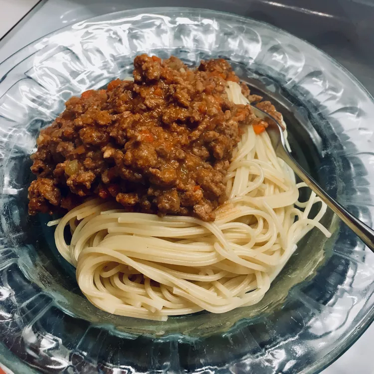

Ragu Bolognese

Description
This is the real deal, an authentic recipe for a meat sauce.
Ingredients
- ½ cup extra virgin olive oil
- ½ cup butter
- 1 cup minced onion
- ½ cup minced celery
- ¼ cup minced carrot
- 1 pound ground veal
- ½ pound ground beef
- ¼ cup finely chopped pancetta bacon
- ½ cup milk
- 2 cups tomato sauce
- 2 cups beef broth
Steps
- Heat olive oil and butter in a large saucepan over medium heat. Saute onion, celery and carrots until soft. Add veal, pork, beef and pancetta, and cook until evenly brown, 15 to 20 minutes. Pour in milk, and cook until liquid has evaporated, about 15 minutes. Stir in tomato sauce and beef broth. Cover, and simmer 2 1/2 hours.